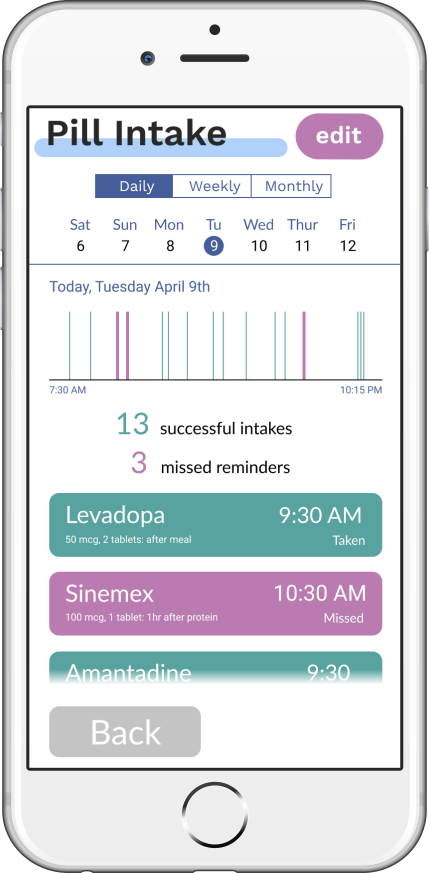
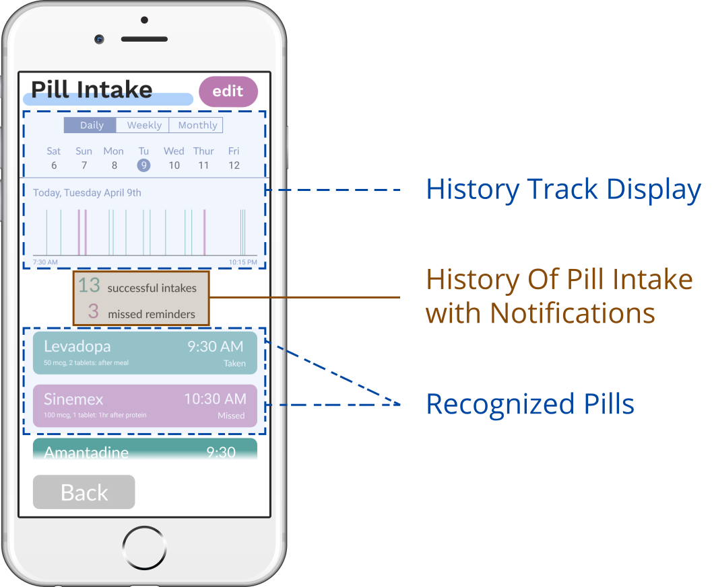
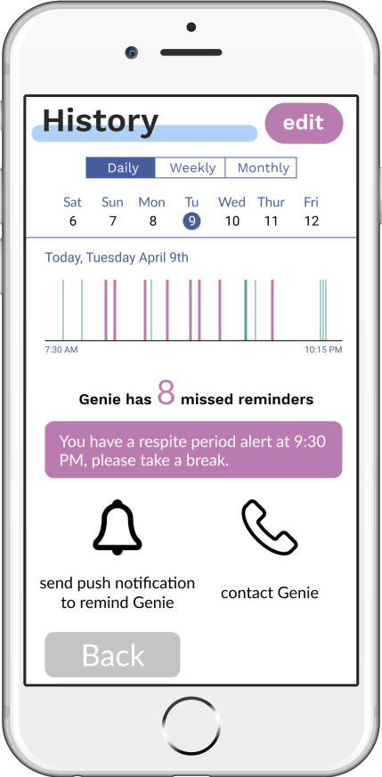
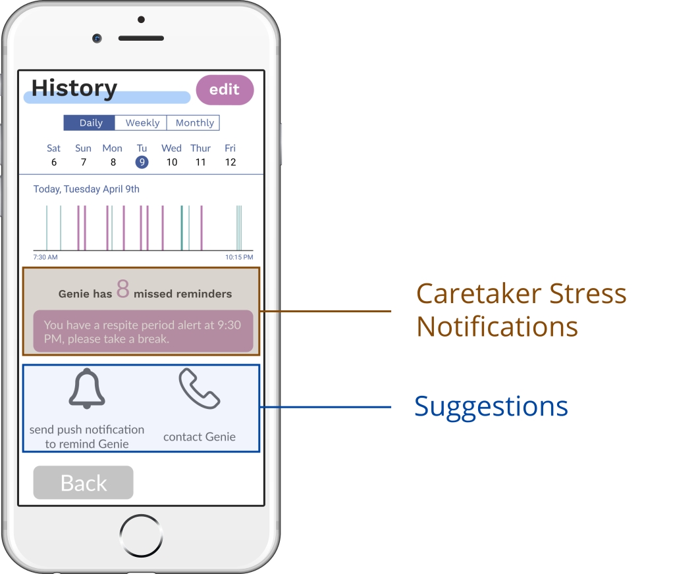

An exercise mat for people with Parkinson's Disease to train their gait using embedded LED lights for visual cues and pressure-based location prediction to lengthen their walking strides.
Overview
Project Type
This was a product design project over a sustained competition.
Objective
To improve the quality of life for Parkinson's patients and caregivers.
Duration
7 months
My Role
I contributed to user research, data synthesis through rapid ideation, to data synthesis, to brainstorming of ideas through research and workshops, to prototyping digital mockups, to facilitating user testing, to final documentation of our solution, and to presenting my team's work.
Tools
Google Suite, Figma
Core Team
April Gau, Christie Wolters, David Laub, Dawn Ye, Emilia Pokta, Enrique Zavala, Jacqueline Lee, Ludi Sabalburo, Willy Ma
Mentors
Chelsea Largoza - She was the main event supervisor and coordinator who helped to clarify the roles, responsibilities, and deliverables needed within the competition.
Damon Deaner and Karel Vredenburg - Damon is the director for Employee Experience Design and Karel was the director for Global Academic Programs, both within IBM. They gave guidance and critique about how to best approach our group’s product design and approach to the competition.
Affiliations
UC San Diego Jacobs Schools of Engineering (ECE Department), IBM, UC San Diego Neurosciences, Design @ UCSD, UC San Diego Design Lab
Design Challenge
Problem Background
People with Parkinson’s Disease of various stages have varied types of motor and non-motor symptoms that have impacted their lifestyles and how their caregivers attend to them. Within the context of this extended Hack-a-thon competition, it was important to find innovative ways to improve the quality of life for Parkinson’s patients and caregivers.
Maintaining freedom of lifestyle, medication adherence, and lack of effective social interactions amongst patients were some of the main problem topics to address.
We had to structure our design thinking and process around obligatory Hack-a-thon days to attend as well as deliverables along the way, which we needed to address to show our progress to Chelsea and other mentors within the competition.
The learning gap of the subject of Parkinson’s disease was quite large. None of us initially had a solid understanding of the topic at hand and Parkinson’s was a multi-faceted, systemic disease that had a wide range of existing symptoms, stakeholders, and solutions to consider.
We had a large group, mostly consisting of designers, but with only one or two engineers. We had to figure out how to collaborate with one another and leverage our strengths to meet project goals into creating a viable produce.
Solution
Our team made Stride, an exercise mat that facilitates physical exercise routines by enabling LED lights to train gait and provide visual cues for patients to lengthen their strides.
Research
Initial Secondary Research
The research began when one of my members, Enrique, and I went to ECE Design Competition information session as a kickoff to the competition, and already we learned about the progression of Parkinson's, associated motor/non-motor symptoms and treatments, fall incidences, and other relevant topics.
After the team was assembled, we did secondary research on existing articles and topics surrounding Parkinson's to learn more about Parkinson's.
Secondary research helped our team to close that knowledge gap about Parkinson's as a whole. We mostly uncovered definitions and conventional understandings of Parkinson's, learned about who was involved in dealing with Parkinson's, and catalogued existing treatments and inventions made.
Mind Mapping
After our team established a basic understanding of Parkinson's, we had a discussion surrounding what we learned and represented our thoughts around a mind map. We listed out the relevant stakeholders, primary and secondary symptoms that Parkinson’s patients may normally experience, treatments for patients that are available, the internal experiences/emotions that these people experience, and existing organizations dedicated to the topic of Parkinson’s disease.
Topics revealed from mind map include relevant symptoms and treatments for Parkinson's, how people share their personal everyday experiences of Parkinson's, existing organizations tackling Parkinson's, and the relevant people involved with dealing with Parkinson's.
Not only did this help frame our team’s approach to further understanding Parkinson's from existing articles and websites, but this helped us prepare relevant questions to ask for Parkinson’s patients, caregivers, and medical professionals.
After dot voting on questions, this list of prioritized questions to answer for future interviews relate to how Parkinson's affect how patients socialize with others, how caregivers balance between their responsibilities to help treat Parkinson's and their personal life, and how medical professionals implement their knowledge of Parkinson's to help treat patients.
Talking to People
To further inform our understandings of Parkinson's, we talked to about 20 people of various backgrounds, including a neurologist, a university lab researcher, an early-stage patient, a caregiver to a patient, and many other patients from visiting support groups. To reach out to them, we scheduled individual meetings with them, went to events that discussed relevant Parkinson's topics, and even visited a Parkinson’s patient’s home.
We had a couple of people that we interviewed complete journey maps to understanding their day in a life and how Parkinson’s has some relation to their lives.
A couple of team members who helped to interview a dance instructor who teaches her classes to people with Parkinson's.
An in-home visit with one Parkinson's patient. We interviewed her and asked her to draw out her day-in-a-life, represented as a journey map.During the in-home visit, our team was able to explore around her house to immerse ourselves into her environment, discover what resources enabled her to move around and do some of her everyday tasks, and further inquire about her way of life. I helped to document videos and images related to the visit.During the in-home visit, she also shared her typical day and activities through conversation as she drew a rough outline of her day-in-a-life.During one of the Hack-a-thon days in the competition, we were able to interview a neurologist who also walked our team through her typical day at work when she visited Parkinson's patients.After talking with the neurologist about her day-in-a-life, more insights were uncovered about how she approached her visits with patients. Constantly communicating, assessing, and documenting patient's conditions and symptoms seemed to be an everyday problem that she has to deal with.
Findings
Below are only some among the many themes that emerged from our research notes.
Patients’ Personal Awareness of Internal Tremors, Body Movements, and Environments
“Now I have to choreograph what I'm doing. Walkin with my dog, pick up your knee, be sure to cock your foot forward.”
“After Parkinson’s = hostile world, anything could kill him in a moment”
“Tremor is annoying as well, persistent. Takes the fun out of relaxing.”
Lifestyles Oriented Around Medications
“Cycle of medications - must adjust activities to on/off of meds When on = do things he could normally do...Off = Parkinson’s symptoms, motor issues, etc”
“As soon as you get off your medication, ‘that’s how it’s going to be for the rest of your life’”
“7AM First dosage of the day, cannot eat protein 1 hr before or 2 hrs after”
Non-Motor Symptoms and Feelings
“Used to be energetic...Consumed with time on managing my time, because of medications and exercise.”
“Need a reason or goal to get up in the morning.”
“Has to count on his wife to do things he used to do all the time like driving”
Experiences of Performing Difficult Activities
“Inconvenient disease in every way: going to bathroom, standing up/down, crossing the street, putting up clothes, list is endless.”
“Any fine motor skills are frustrating and difficult”
“Hard to get up after falling.”
Observation Notes from Rock Steady Boxing Experiences
“They loved the bonding experience in being in the boxing session. What helps is the enthusiastic staff, having kinetic feedback in exercises, and remembering [numbers] for punch combos to have something to improve upon in their life.”
“With the boxing session, they didn't like being told what to do to learn and would've liked a more inclusive & easy form of learning.""
They did however like the dignity of not being "babied" to learning how to box.”
Insights
Below are understandings established after interpreting research notes and data.
...from Secondary Research
Medications help with retaining patients’ abilities to do their day-to-day tasks, but the effects of Parkinson’s would be evident if a patient’s medication wears off. The effectiveness of the medication would depend on the stage and progression of a person’s Parkinson’s, rendering medication less effective if a person were more late-stage.
The importance of tracking patient’s symptoms overtime cannot be overstated, as it ensures that medical professionals are both acutely aware and accurately understanding of the patients’ conditions and history with PD.
...from Interviews and Observations
It is often difficult, slow, frustrating, and/or fearful for them to perform basic activities, even walking and taking steps.
Their motor and non-motor symptoms correlate to challenges for performing everyday tasks, or even having the self-esteem/motivation to get up in the morning.
Within rock-steady boxing classes, people with Parkinson’s would preoccupy themselves by focusing on their exercises and achieving them. Although challenging for some of them, they do like to try to keep up with the routines.
...from Journey Maps
Medical professionals want to understand the patient’s problems and available treatment methods to best help them. How can they also effectively take information about the patient’s symptoms, history, and diagnoses and present/communicate it effectively to other doctors?
Medical professionals do their best to treat and diagnose their patients' symptoms and issues through preparing questions to ask, performing tests, and determining diagnoses to take inventory of the patient's conditions and medical history.
It was essential for medical professionals to document their understandings of the patient into a report as a reference while also maintaining work-life balance.
Data Synthesis
Putting It All Together
During one of the Hackathon days, our group hosted a participatory design workshop with IBM company representatives, an industry designer, a patient, and a caregiver to synthesize our collective knowledge of Parkinson’s and classify important topics to consider.
People coming together to put their ideas on the wall through sticky-note brainstorming about Parkinson's during the design workshop.
Each person was able to brainstorm different topics on sticky notes and put them up on the wall as an affinity diagram. The ideas were open-sorted into emergent categories that were related to topics of Parkinson's and everyone placed their votes on which topics to focus on.
The numbers signify the amount of dot votes placed for each problem space. This democratic process of voting for each category informed the team of which problem spaces that our team should tackle.
A piece of the sticky note affinity diagram that captured three very prominent problem spaces. Problem spaces emerged from the sorting of the sticky notes into relevant categories.Affinity diagram overview of all of the different problem spaces that emerged from the design workshop, with all of the dot votes numbered for each problem space.
Problem Spaces
Based on the votes made from the sorted categories on the affinity diagram, these were some of the topics that were most important to explore.
Social Interactions
There was a need for support groups, or other ways to promote interactions and bonding between patients. How might we sustain such a commmunity amongst Parkinson's patients to improve their daily life?
Maintaining Agency
There was a need from patients and caregivers to live out their daily lifestyles without Parkinson's affecting their daily routines. How might we enable patients and caregivers to have as much time as possible to do daily activities and hobbies that they want to engage in?
Live Symptom Awareness
There was a need from patients, caregivers, and medical professionals to actively monitor and manage the progression of a patient's Parkinson's. How might we enable them to stay informed of the issues and treatments needed to address the patient's symptoms?
Ideation
We explored existing solutions relative to these problem spaces, as each member in our group conducted additional secondary research to explore different products available. This enabled us to understand existing solutions out there for Parkinson’s and have everyone in our team brainstorm ideas to tackle these issues.
From rails and support grips, to cups specifically designed for people having difficulty handling objects, and to wearable digital technology, we brainstormed ideas and put them up on the wall to organize them.
Sticky notes from brainstorming different solutions, such as cup designs, tap stimulation on shoulders, shoes with projected lights, and community-based exercises.
We sorted similar ideas into groups, dot voted on which ideas to explore, and further eliminated ideas to decide on a solution to explore.
The process to eliminate and choose our solution was not easy, as it was necessary for the team to introduce different factors to help us decide on an idea. Some considerations for choosing our initial idea included how feasible it was to implement the idea, how simple the idea is to make and execute, and the "pivotability" of the idea (how easily the team adapt to a different direction of the idea).
Whiteboard notes of the criteria and other considerations to decide on our idea.
Initial Idea Chosen - Smart Bottle with App
The idea that we chose was a smart bottle because there was potential for the idea to address the problem spaces, it was a simple, feasible solution that our group can make with the possibility of integrating Internet of Things into it, and it was easy to shift to a different direction of the idea should the bottle fail to initially address the problem spaces.
Feature Ideation
We repeated a design sprint workshop to focus more on what specific features of our potential smart bottle idea we should prioritize, which started with more brainstorming of features.
Overview of the features sorted. Other than pill dispensing, other types of features that we thought of included aesthetic personalization of the bottle, connectivity to apps, pill notifications, and physical components of the bottle.
Types of features we thought of included the following:
Pill Dispensing This was feature that was conventional across most medication products, of which there would be a mechanism within the bottle to easily dispense the right amount of medication.
Bottle Handling Ergonomics of the bottle especially helps patients with motor symptoms (such as tremors) overcome difficulties of steadily holding and using the bottle.
Stylizing the Bottle Making the design of the bottle dignifying so that Parkinson's patients would want to carry about and use it in public without feeling embarassed about it in front of others. This was to address the social aspect of the social interaction problem space.
Pill Tracking There was potential to integrate digital technology to aid the patient in effectively monitoring the frequency, dosage, medication type, and timing of taking the medication.
Notifications for Pill Ordering/Consumption Automation of important push messages to patients and caregivers to help them refill or consume their medications in a timely manner.
Bottle Connectivity to Apps More potential for incorporating Internet of Things to help make the data collected of the patient's usage of the bottle trackable and understandable for caregivers and medical professionals to analyze.
Feature Prioritization
Once we sorted the features to categories, we set up and used an Eisenhower Matrix to prioritize which features to focus on for the prototype of our smart bottle.
Enrique did most of the sorting of the different sticky notes that we had gathered, but with me and another team member, the categories emerged. Some smart bottle features considered were defined as lights ("LED indicator"), how feasible it was to drink from the bottle ("drinkability"), and having "calm" pill reminders.Overview of the Eisenhower matrix, which evaluated how each of the features were valuable to the person using the bottle as well as how easy it was to implement the features.Close-up of smart bottle features in the upper-right quadrant of the matrix that were prioritized.
Our smart bottle idea would have an accompanying app to facilitate live symptom awaress through medication adherence for Parkinson's patients. Our group would decide to split into two teams.
One group would create the actual physical product of the bottle, while the other developed the sofware for an accompanying app for addressing medical adherence and personal agency.
Categorized features based on physical or digital components of the bottle. Other features were de-prioritized.
Prototyping
Our idea for the smart bottle was still yet to be tested, so I placed myself into the software group to help explore the features of the accompanying app.
My teammates worked on the information architecture. Because of how the app features were explicitly laid out and prioritized, it was a useful reference for me to gather inspiration about the visual designs and implementations of existing water and pill tracking apps.
Information architecture of the smart bottle app for the patient, made by Enrique Zavala and April Gau. Some of the features of the app include device connectivity setup, calibrating pill tracking sensing, and pill/water intake history.
I helped to sort images of existing pill/water tracking app features into the features outlined in the information architecture so that the inspiration can be easily visualized and the prototype would be informed from such features.
The full visualization of the work done to gather the inspiration would be too large to view, but you can check out the following links:
User Flow Feature Inspiration on Figma - Screenshots derived from the previous link to app feature inspiration, except there are even more screenshots and these were closed-sorted to the user flow model of the information architecture.
The feature inspiration was adapted to fit into the existing information architecture that was initially created, but because this task was undertaken within the weekend of the 2nd Hackathon,
filling out the inspiration in relation to all of the features mapped into the architecture would have taken too long to develop the prototype in addition to making the presentation deliverable that was needed on Sunday.
It was in the best interest, on behalf of the group, for me to showcase the main features on the smart bottle app and help determine if our group's solution of a smart bottle and app would be appealing to our stakeholders and judges.
However, it was still necessary to have the work of the mockups be informed back to problem spaces around patients, caregivers, and medical professionals.
A teammate decided to create 3 separate storyboards, one for PD patients, another for caregivers, and a third for medical professionals respectively.
A group discussion ensured improvements and completeness to the narrative behind the storyboards and to better contextualize how the features of our smart
bottle and app were impactful to the problem spaces for each stakeholder.
Storyboard for Patients
This storyboard relates to the patient who would use the smart bottle app to help remind them of when they need to take their medication. The app would help the patient effectively manage their medication schedule and control onset of symptoms that affect their daily tasks. Made by Dawn Ye.
Storyboard for Caregivers
This storyboard illustrates how the smart bottle app enables the caregiver to remind the patient to take their medication. The app would also send notifications to the caregiver to take needed respites away from their responsibilities of caring for the patient. Made by Dawn Ye.
Storyboard for Medical Professionals
This storyboard shows that the smart bottle app could help medical professionals better understand the patient's history of their medication schedule and steer the conversation for them to better help the patients during visits. Made by Dawn Ye.
I helped tag the individual storyboards with phrases involving relevant features that they would include. This would further inform the features incorporated into the user interface components of the prototype mockups.
Connection of storyboards to relevant features from the information architecture and user flow inspiration.
First Prototype
With the visual style guide as another reference, I quickly made the prototype mockups in the form of wireframes.
Visual style guide used to make the wireframes for the prototype mockups. Made by Enrique Zavala and April Gau on Figma.


Wireframe of the pill intake feature with user interface components to help temporally track a patient's consumption of medication with specific dosage information. Wireframe made on Figma.


Wireframe of the history feature for caregivers to monitor the patient's medication adherence and to prompt caregivers to help remind patients. Wireframe made on Figma.
My other teammates helped to officially create the physical components necessary for the smart bottle itself. Shown below are presentation slides presented on a Hackathon day to mentors and judges to illustrate the process of including the physical features for the smart bottle.
Feedback and Pivoting
Feedback
From given feedback with mentors, judges, caregivers, and PD patients, the creation of our smart bottle still entailed issues of the placement of specific components of the bottle,
such as inadequately separating the pills from the water as well as how feasible it was to handle the bottle when a PD patient would drink from it.
Other Considerations
Given plenty of existing solutions (especially in relation to medication adherence) both online and within other teams’ work in their presentations, it didn’t seem that our solution
was too novel or impactful enough to adequately resolve the problem spaces that our team established within the scope of the competition. Thus, the team decided to explore other
concepts that would reassess what core issues we wanted to tackle.
Need to Further Manage Research Data
However, seeing how much work it was that we had, it was becoming much more difficult to manage a lot of the research and ideation that we performed. Before we moved forward with
more ideation and to better ground our ideas into the work we’ve done, I worked with Enrique to further synthesize all of the work so far into a vector-based file on Figma.
Double-diamond visual representation of design process done. This included all of our primary research, secondary research, notes, images, journey maps, problem definitions,
and ideation work captured. This enabled a holistic view of our project as a whole so that future design decisions on continuous ideation would remain informed by existing
research work done. To see the enlarged full version, check out the Data Synthesis Visualization on Figma.
Some more ideas that our team members came up with included:
Digital Gamification - This was similar to the themes of motivating people to perform activities for self-agency while also being community-based, like Pokemon Go’s intrinsic need for the person to walk to a location and perform other activities to get rewards.
Self-Help Guide - This would be a digital platform or app for patients and caregivers to have all information related to Parkinson’s consolidated and centralized. It would have an online forum to find out and interact with others who also deal with Parkinson’s.
Retrofit House Lights Sensors - These would incorporate some light source, possibly audio and other types of feedback to improve gait and prevent freezing.
Smart Lamps - These would be distributed around the house and leverage the Internet of Things (IoTs), such as app connectivity, to provide medication and other helpful notifications.
Remote voting session through a poll, with more ideas created to determine what solution to pivot towards.
More Feature Ideation
At the time, the team decided to dive deeper into the retrofit house lamp idea because of how well it was informed by existing research for patients’
needs to navigate around at night, integration of caregiver respite into the solution, and how it could ease the process of live symptom awareness.
The team gathered more inspiration of features from existing solutions of smart lamps to include. Even more ideas that we’ve came up with were:
A light-up plant - A potted plant that could communicate to other family members when a person was tending to the plant. Medication reminders and caregiver respite reminders can be integrated within the plant.
Non-pharmaceutical light therapy - This type of lamp would use an infrared light to stimulate neurons around the head and reverse effects neurodegeneration.
Voice controlled house lamps - This type of lamp involves app connectivity that could potentially change light colors or brightness depending on change in events, such as bedtime, rainy weather, mood etc.
As our team decided to segregate the features into physical and digital parts of our retrofit house lamp solution to finalize our pivot from our smart
bottle solution, we quickly ran into issues with that concept as well. A single house lamp would be too localized within the household to effectively
help the person navigate around their home while having many different house lamps requires installation and tedious maintenance, as we previously
witnessed during our in-home visit with Jeanie.
Thus, it was important for us to further converge onto a problem space that we wanted to specifically address while considering other ideas to address
that problem space. There was eventual consensus of focusing on improving patients’ gait, in relation and more emphasis to maintaining agency. We
eventually settled on making house floor tiles, since some of our team members gathered additional inspiration of the mat that visually mimicked a
staircase as well as tying this back to our original research on exercise routines as non-pharmaceutical interventions.
Image reference of a mat with a staircase formfactor that the team wanted to explore further. Original inspiration for exercise equipment and routines helped to specify the potential usage of the staircase mat idea.
Second Prototype
The team split into two different teams again, one for producing the actual mat and another for research and user testing. I was with the user testing team
to help contact individuals to potentially test out the mat. To get a general sense of the second prototype, this is what the mat-building team
made. This was a low fidelity version of our mat which mimics a 3D staircase, and was inspired by Mileha Soneji’s creation of her staircase mat.
Digital sketch and initial physical prototype of the mat. Both incorporate a 3D-optical illusion of the staircase pattern. The physical prototype has blue and red LED lights with wires connected to an Arduino (Arduino not shown).
Since our team’s solution was geared towards leveraging exercise routines and improving gait, it was important for me to help the user testing team contact
instructors from rock steady boxing classes since people from earlier interviews suggested to look into groups that host these classes. Since these classes
seemed to be aligned with the subject of exercise for people with Parkinson’s, our team thought these would have people who would be representative of using
our solution.
User Testing
Emilia, April, Dawn, and I composed of the user testing team, and we were able to visit a rock-steady boxing gym to have several Parkinson's patients from
rock-steady boxing classes help test out mat. After these people consented to be volunteers, I facilitated each person on the activity that they were going to do,
which was to walk normally without the mat, walk again using the mat, and walk on the mat with a metronome sound playing. The prototype was setup
Ultimately, we, as the user testing team, wanted to understand how the patients would want to viably use the mat. It was important to compare the nature of their
gait and length of their strides while they walked normally, while they used the mat, and while there was audio feedback to supplement the mat. We recorded times
for each round as well as video recordings to observe how each person walked. Volunteers were also asked to self-report their experience on a 5-point Likert scale
on how easy it was to traverse the mat, 1 being the hardest, 5 being the easiest. April and Dawn helped to follow up with each person with additional questions
after each volunteer finished the activity.
Rock steady boxing class where the user testing was conducted. Volunteers were shown how to perform each test by walking normally with and without the mat.Volunteers walking on the mat to help with the user testing.
Feedback Gathered
Much of our feedback was organized and consolidated into a spreadsheet that helped us list out recommendations for improvements for user testing and iterating on
the design of the mat. Other than confounds discovered from user testing protocol, some key themes emerged.
The staircase pattern was visually disorienting. - The optical illusion of the staircase along with the LED lights were visually overloading to the patients and forced them to step on the black areas of the mat.
The volunteers were not used to the metronome playing. - When they walked, they were not accustomed to moving to the beat of the metronome.
LED lights helped with the person's walking. - The lights contributed to faster walking time and greater length in their strides.
Spreadsheet of consolidated feedback based on observations, recorded footage, and volunteer responses from follow-up interview questions.
A Home Revisit
We revisited the same Parkinson's patient's home to have her test out our new mat. We took confounds and recommendations from our feedback gathered into consideration by removing the need
to test for sound. We documented her responses to follow-up questions after she performed the activity.
We followed up with the same person from the previous the in-home visit. She would also help us test out the mat by walking on it.
Iteration
During another group meeting, we showed the feedback that we gathered with the members who focused on the product design and implementation.
From additional discussion, we agreed that the mat needed to be simplified. The following features would be included upon the next iteration
of the mat.
Flatter Formfactor and Appearance
A two-dimensional, rectangular ladder design with a general yoga mat further minimizes the visual overload the person experiences while use the mat.
Sketch of how placement of LED lights would simplify the design to the desired rectangular formfactor.
Smoother Integration of Parts
Smoothly embedded LED lights would also be meshed into the mat to promote safer, unintrusive walking on the mat. More organized or embedded external wiring would be incorporated into the implementation of the mat as well so that the mat can be safely handled and placed on flat floor surfaces.
Sketch of how long, narrow gaps that have appropriate tolerances can easily fit LED light strips into the mat without risk of tripping.
Improved Haptic Sensing of Location of Person's Feet
Additonally, conductive fabric would be made to better gauge where the person's steps would be located relative to the mat.
Conductivity meter used to test within the team if the fabric on the mat could sense the presence of a person's feet through measured conductivity changes in the fabric.
Final Solution
Stride, an electric mat to improve patients’ gait using LED lights to train their gait and length of strides.
Future Directions
Data capture assessments - Ways to Quantify and Qualify self Sensors to measure adherence to heel-to-toe technique, as well as stride length.
Dancing? Due to the modularity of the mat, we envision the mat to be able to fit together and function as a dance floor.
Applications of Mat Usage
Physical Therapy / In-home PT exercise Improving forward and lateral movement, lengthening stride to combat shuffling behavior.
Gym / Rock Steady Boxing / Workplace Mat could be easily integrated into existing exercises at RSB or into self-or-caregiver mediated exercises.
Portability, On-the-Go Usage Many people we interviewed expressed they have an active lifestyle filled with traveling. This travel-friendly mat could be taken to hotels or relatives’ homes.
Social Engagement Many mats together sounds like a very fun dance party!
Results
Our teammates were able to pull together a final poster and presentation slide deck to present our work and findings.
Final Poster
Presenting Our Work
We presented our final design, poster, and presentation to the general public and a panel of judges, which consisted of our mentors, other IBM representatives, Parkinson’s patients and caregivers, and other visitors.
I was amongst the three people in our team who presented our final product.
To our surprise, we happened to win the competition 1st place!
Group photo of the team with a caregiver and patient as a couple of the judges.
Reflection
Thinking back on the experience, it was as if I was running a long marathon, with no certainty of what was to come during the final presentation.
But, it definitely was one of the greatest test of my design repertoire thus far with quite a few takeaways.
The Importance of Design Ownership and Practice Combined With Real-World Constraints
This project inspired me to leverage my background in both design and media to work with others on a large topic such as Parkinson's.
From participating in brainstorming workshops, to managing media assets and research work, and to polishing up the final poster, it
was important for me to take advantage of opportunities to get to the right design and doing design right all while collaborating with others
on dealing with constraints that limit those opportunities.
People, Research, and Prototyping
This seems to be analogous to good design and implementation, since it was important to have a diverse, dedicated team to really understand
the topic of Parkinson's through different approaches and lens while exploring ideas and solutions that were grounded on solid findings.
With such a team, rapid prototyping encouraged us to explore lots of different ideas, to validate our assumptions and produced research, and to
improve the way that we approach the original problem whilst still coming up with some feasible product.
Testing to Investigate, Not Just Validating
Feedback on different ideas became especially important to not only understand how relevant stakeholders, competition mentors, and
even teammates viewed our team's established prototypes of our solutions, but it also helped us to fail fast and fail forward so
that our mat idea was well considered against previous solutions that were formerly thought as novel and impactful.
Next Steps
From my observations and current knowledge of how the project went, here is what I would proceed next steps to the project.
Re-thinking about the implementation of our current mat.
Given the tight constraints on the implementation of our final solution, there needed to be more assumptions tested on how the Parkinson's
patients, caregivers, and experts can take advantage of its features to make the mat applicable to different settings, such as other
rock-steady boxing classes, inside and outside of buildings, and even at different treatment centers for doctor visits.
Understanding other perspectives that affect a Parkinson's patient and caregiver's needs.
Factors such as socio-economic status, the current progression of a Parkinson's patient's medical condition, and existing treatments
that patients and caregivers resort to are only just a few different questions that need more answers from more Parkinson's patients, caregivers,
and experts from more diverse backgrounds. More visits to places where these people typical live in would help to address how those factors affect
patients and caregivers' lifestyles.
Further validation of the usage of the mat.
Much of the functionality and handling of the mat remained largely controlled by the product design team who built and controlled
the mat. Further development of the mat should be geared towards how usable and useful the mat can be to Parkinson's patients and caregivers.
Testing of the mat would be geared more towards how these people can handle the mat to make useful for improving their gait and length of their strides.